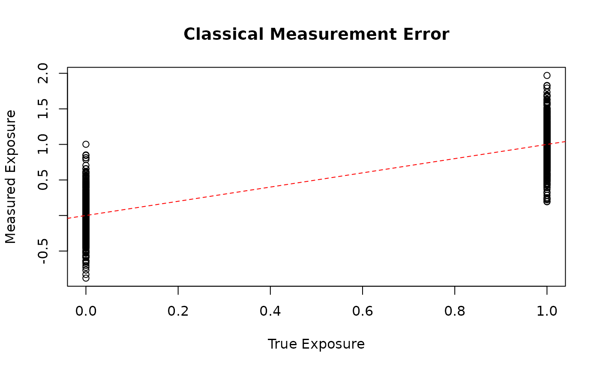
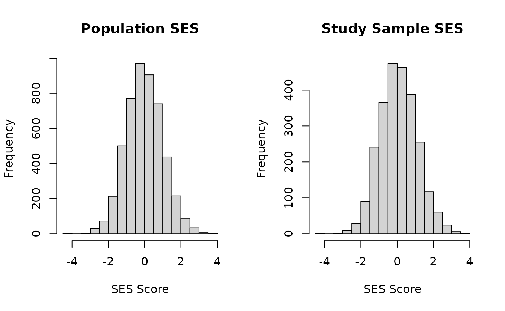

library(margot.sim)
#> margot.sim 0.1.1
library(ggplot2)Introduction
Real-world observational data is often a “shadow” of the true
underlying process. The margot.sim package implements
various types of observational distortions through its shadow system.
This vignette demonstrates how to apply these shadows to simulated
data.
What are Shadows?
Shadows represent common data quality issues in observational studies:
- Measurement error: Variables measured with noise
- Item missingness: Missing data patterns (MCAR, MAR, MNAR)
- Selection bias: Non-representative sampling
- Positivity violations: Lack of overlap in treatment groups
Basic Shadow Application
Let’s start by simulating clean data and then applying shadows:
# Generate clean data
set.seed(456)
clean_data <- margot_simulate(
n = 1000,
waves = 2,
apply_process_function = FALSE # Keep raw data
)
# Create a measurement error shadow
me_shadow <- create_shadow(
type = "measurement_error",
params = list(
error_type = "classical",
variables = c("t1_a", "t2_a"), # Apply to exposures
sigma = 0.3 # Standard deviation of error
)
)
# Apply the shadow
data_with_error <- apply_shadow(clean_data, me_shadow)
# Compare clean vs error-prone measurements
plot(clean_data$t1_a, data_with_error$t1_a,
xlab = "True Exposure", ylab = "Measured Exposure",
main = "Classical Measurement Error")
abline(0, 1, col = "red", lty = 2)
Item Missingness Patterns
Different missing data mechanisms have different implications:
# Missing Completely at Random (MCAR)
mcar_shadow <- create_item_missingness_shadow(
variables = c("t1_y", "t2_y"),
missing_rate = 0.2,
missing_mechanism = "MCAR"
)
# Missing at Random (MAR) - depends on observed variables
mar_shadow <- create_item_missingness_shadow(
variables = c("t1_y", "t2_y"),
missing_rate = 0.3,
missing_mechanism = "MAR",
dependent_vars = c("b1", "t0_a") # Missingness depends on these
)
# Apply both shadows
data_mcar <- apply_shadow(clean_data, mcar_shadow)
data_mar <- apply_shadow(clean_data, mar_shadow)
# Compare missingness rates
cat("MCAR missingness rate:", mean(is.na(data_mcar$t1_y)), "\n")
#> MCAR missingness rate: 0.226
cat("MAR missingness rate:", mean(is.na(data_mar$t1_y)), "\n")
#> MAR missingness rate: 0.336Multiple Shadows
You can apply multiple shadows sequentially or combine them:
# Create multiple shadows
shadow1 <- create_shadow(
type = "measurement_error",
params = list(
error_type = "classical",
variables = "t1_a",
sigma = 0.2
)
)
shadow2 <- create_item_missingness_shadow(
variables = c("t2_y"),
missing_rate = 0.25,
missing_mechanism = "MAR",
dependent_vars = c("t1_a", "t1_y")
)
# Apply shadows sequentially
data_shadowed <- clean_data |>
apply_shadow(shadow1) |>
apply_shadow(shadow2)
# Or use apply_shadows for multiple at once
shadows <- list(shadow1, shadow2)
data_shadowed2 <- apply_shadows(clean_data, shadows)
# Check results
sum(is.na(data_shadowed2$t2_y))
#> [1] 246Positivity Violations
Positivity violations occur when certain covariate combinations have no treated/untreated units:
# Create positivity shadow that removes extreme covariate values
# Filter function keeps only observations where b1 and b2 are in reasonable range
pos_shadow <- create_positivity_shadow(
exposure_var = "t1_a",
filter_fn = function(data) {
# Keep observations where covariates are within central 90%
b1_limits <- quantile(data$b1, c(0.05, 0.95))
b2_limits <- quantile(data$b2, c(0.05, 0.95))
data$b1 >= b1_limits[1] & data$b1 <= b1_limits[2] &
data$b2 >= b2_limits[1] & data$b2 <= b2_limits[2]
}
)
data_trimmed <- apply_shadow(clean_data, pos_shadow)
# Compare sample sizes
cat("Original n:", nrow(clean_data), "\n")
#> Original n: 1000
cat("After positivity trimming:", nrow(data_trimmed), "\n")
#> After positivity trimming: 811Analyzing Shadow Effects
You can analyze how shadows affect your data:
# Analyze the effect of measurement error
shadow_effects <- analyse_shadow_effects(
original = clean_data,
shadowed = data_with_error,
variables = c("t1_a", "t2_a", "t2_y")
)
print(shadow_effects)
#> Shadow Effects Analysis
#> ====================
#>
#> Variable: t1_a
#> Missing introduced: 0.0%
#> Mean shift: -0.007
#> SD ratio: 1.182
#>
#> Variable: t2_a
#> Missing introduced: 0.0%
#> Mean shift: 0.000
#> SD ratio: 1.177
#>
#> Variable: t2_y
#> Missing introduced: 0.0%
#> Mean shift: 0.000
#> SD ratio: 1.000Real-World Example: Selection Bias
Let’s simulate a realistic scenario with selection bias:
# Generate population data
population <- margot_simulate(
n = 5000,
waves = 2,
params = list(
b_a_coef = 0.4,
a_y_coef = 0.6
)
)
#> Warning in validate_proportions(a_coefs, paste0("t", t, "_a")): coefficients
#> for t1_a sum to 1.00 (>= 0.95), reducing proportionally
#> Warning in validate_proportions(a_coefs, paste0("t", t, "_a")): coefficients
#> for t2_a sum to 1.00 (>= 0.95), reducing proportionally
# Create selection shadow - higher SES more likely to participate
selection_shadow <- create_shadow(
type = "selection",
params = list(
selection_type = "custom",
selection_prob_fn = function(data) {
# Higher b1 and b2 values increase selection probability
# Normalize to 0-1 scale
ses_score <- (data$b1 + data$b2) / 2
ses_normalized <- (ses_score - min(ses_score)) / (max(ses_score) - min(ses_score))
# Map to 30-70% selection probability range
0.3 + 0.4 * ses_normalized
}
)
)
# Apply selection
study_sample <- apply_shadow(population, selection_shadow)
# Compare distributions
par(mfrow = c(1, 2))
hist(population$b1, main = "Population SES", xlab = "SES Score")
hist(study_sample$b1, main = "Study Sample SES", xlab = "SES Score")
Combining Everything
Here’s a complete example with multiple realistic shadows:
# Start with clean data
set.seed(789)
true_data <- margot_simulate(
n = 2000,
waves = 3,
n_outcomes = 2
)
# Create realistic shadows
shadows <- list(
# Measurement error in exposure
create_shadow(
type = "measurement_error",
params = list(
error_type = "classical",
variables = c("t1_a", "t2_a"),
sigma = 0.25
)
),
# Differential missingness in outcomes
create_item_missingness_shadow(
variables = c("t2_y1", "t2_y2", "t3_y1", "t3_y2"),
missing_rate = 0.2,
missing_mechanism = "MAR",
dependent_vars = c("t1_a", "b1")
),
# Selection on baseline characteristics
create_positivity_shadow(
exposure_var = "t1_a",
filter_fn = function(data) {
# Keep central 80% based on covariate values
# This ensures overlap in covariate distributions across treatment levels
cov_score <- rowMeans(scale(data[, c("b1", "b2", "b3")]))
cov_limits <- quantile(cov_score, c(0.1, 0.9))
cov_score >= cov_limits[1] & cov_score <= cov_limits[2]
}
)
)
# Apply all shadows
observed_data <- apply_shadows(true_data, shadows)
# Summary of data quality
cat("Original sample size:", nrow(true_data), "\n")
#> Original sample size: 2000
cat("After shadows:", nrow(observed_data), "\n")
#> After shadows: 1600
cat("Outcome missingness rate:",
mean(is.na(observed_data[, grep("y", names(observed_data))])), "\n")
#> Outcome missingness rate: 0.087625Best Practices
- Document your shadows: Keep track of what distortions you’ve applied
- Validate assumptions: Check if your shadow parameters are realistic
- Compare results: Always compare analyses on clean vs shadowed data
-
Use Monte Carlo: For systematic evaluation, use
margot_monte_carlo()
Summary
The shadow system in margot.sim allows you to: - Add
realistic observational distortions to simulated data - Combine multiple
types of bias and measurement issues - Systematically evaluate how these
affect your analyses - Better understand the robustness of statistical
methods
This helps bridge the gap between idealized simulations and messy real-world data.